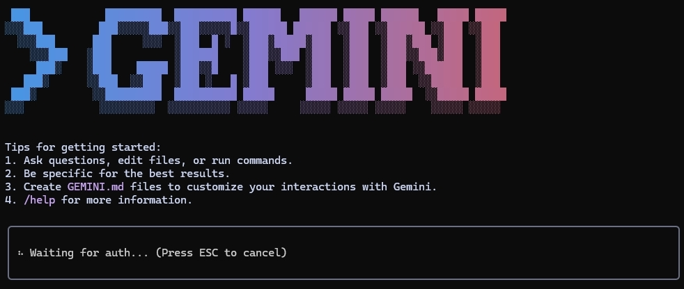
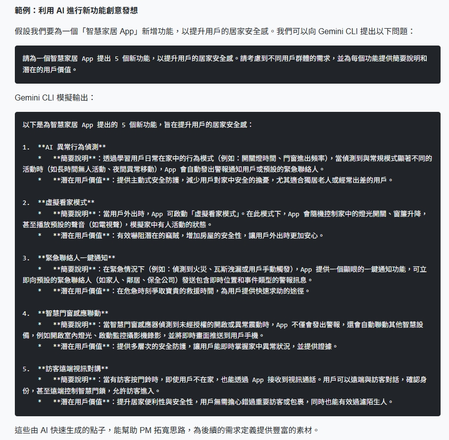
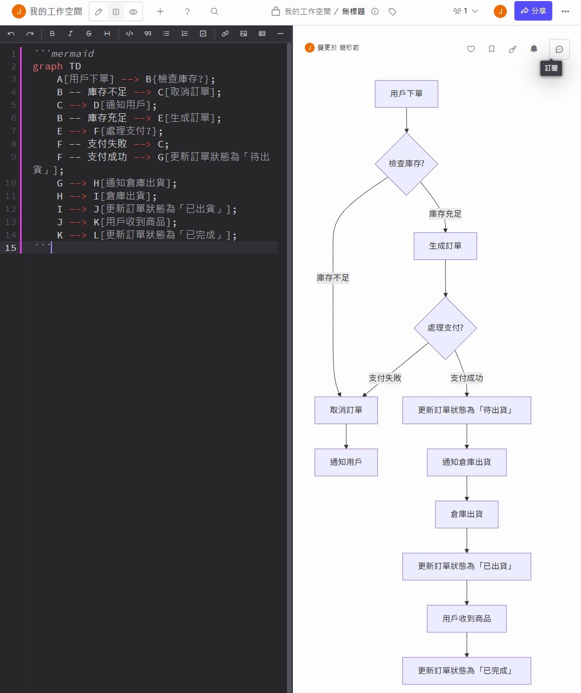
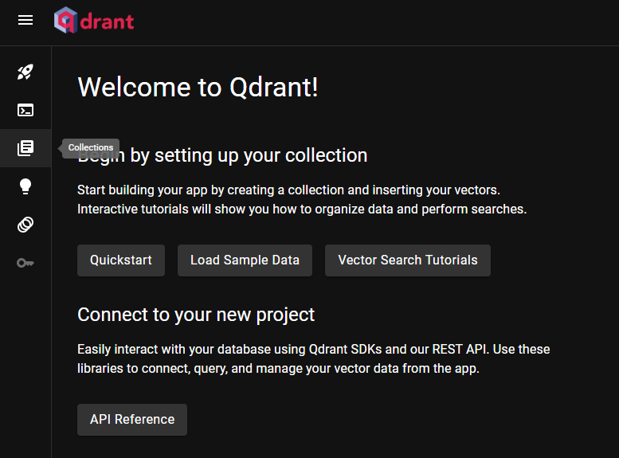

AI 自動化與工作流教學
歡迎來到我的教學頁面。這裡將會分享各種 AI 自動化與工作流的實用教學，從 n8n 的基礎與進階應用，到產品經理如何與 AI 協作，提升工作效率，帶您一步步打造專屬於您的智慧流程。
PM x Gemini CLI 邪術協作術
本系列專為產品經理 (PM) 與任何需要處理大量文字資訊的工作者設計。我們將探索如何運用 Gemini CLI 工具，高效地整理使用者回饋、分析數據、發想功能、乃至於撰寫結構化的產品需求文件 (PRD)，讓 AI 成為您最強大的工作夥伴。
秉持著「Dogfooding (吃自己的狗糧)」的精神，本系列的每一篇文章、每一個範例，完全是作者使用 Gemini CLI + VS Code 協作完成。這不僅是一份教學，更是一場完整的實踐紀錄。
系列 Podcast 導論
EP0：前言
PM x Gemini CLI (一)：環境設定與專案準備 Podcast

從零開始，詳細介紹 Gemini CLI 的安裝、設定，以及 VS Code 環境的準備，為後續的協作流程打下堅實基礎。
查看詳情PM x Gemini CLI (二)：Gemini CLI 基本指令與認證 Podcast
在專案資料夾中啟動 Gemini CLI，進行 Google 帳號認證，並說明 /init 和 /clear 指令的使用時機與功能。
查看詳情PM x Gemini CLI (三)：AI 賦能產品探索與定義 Podcast
聚焦產品開發的「前期探索」階段。教學如何利用 AI 進行市場研究、創意發想、使用者回饋分析，並將模糊概念轉化為可互動的 UI 原型與清晰的流程圖。
查看詳情PM x Gemini CLI (四)：AI 驅動的規格撰寫與專案管理 Podcast

聚焦於「打造藍圖」與「管理流程」。教學如何轉變為「規格驅動開發」，並撰寫專業 AI 指令稿來產出 PRD 與 QA 清單，最後展示如何建立並管理 AI 專家團隊。
查看詳情PM x Gemini CLI (五)：AI 時代的敏捷實踐與 PM 新角色 Podcast
探討 AI 如何重塑敏捷開發流程、實現「活文件」的理想。同時反思在 AI 時代下，產品經理的核心價值如何轉變，從執行者進化為產品領袖。
查看詳情n8n 系列：基礎 (Supabase 雲端整合)
本系列將帶您從零開始，學習 n8n 的基本操作，並整合 Supabase 雲端向量資料庫與 Gemini AI。完成後，您將擁有一個能透過雲端知識庫回答問題的基礎 RAG (檢索增強生成) 應用。


n8n 系列：進階 (在地化部署 Qdrant)
本系列專為重視資料隱私與自主性的使用者設計。我們將學習如何在本地環境安裝並設定 Qdrant 向量資料庫，並將先前的工作流無縫對接到這個私有化知識庫，實現一個完全由您掌控的 RAG 應用。
n8n 教學 (七)：在 Qdrant 中建立您的第一個向量資料庫
本篇將帶您實際操作 Qdrant Web UI，建立一個 Collection 並設定向量維度，完成您的第一個在地向量資料庫。
查看詳情